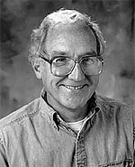

J. William Forgie
Emeritus Professor of Philosophy
PhD, Cornell University
Areas of Study
- Philosophy of Religion
- Epistemology
- Wittgenstein
Contact
Research Abstract
I was first drawn to philosophy through questions about the existence of God, and even now the philosophy of religion, broadly construed, remains my chief area of professional interest. Some of my work in this area has focussed on the ontological argument, both in its classical forms and in its more current modal versions, but even more on issues in metaphysics and philosophy of language that may originally have arisen in connection with the ontological argument but have long since taken on a life of their own (e.g., the nature of existence statements, the question: is existence a property?, the status of merely possible objects). I am currently attempting to unify this work into a book. Elsewhere within the philosophy of religion, I continue to work on the nature and possible evidential value of religious or mystical experience. And outside my core area I have also pursued interests in philosophical skepticism and in the philosophy of Wittgenstein.
Selected Bibliography
Articles
“Hyper-Kantianism in Recent Discussions of Mystical Experience,” Religious Studies, Vol. 21, 1985.
“Wittgenstein, Skepticism and Non-Inductive Evidence”, Pacific Philosophical Quarterly, Vol. 67, 1986.
“The Caterus Objection”, International Journal for Philosophy of Religion, 28, 1990, pp. 81–104.
“The Modal Ontological Argument and the Necessary A Posteriori”, International Journal for Philosophy of Religion, Vol. 29, 1991.
“Kant on the Relation Between the Cosmological and Ontological Arguments”, International Journal for Philosophy of Religion, Vol. 34, 1993.
“Kant and Frege: Existence as a Second-level Property,” Kant-Studien, Vol. 91, 2000.
“Gassendi and Kant on Existence”, Journal of the History of Philosophy, 2007, doi: 10.1353/hph.2007.0078